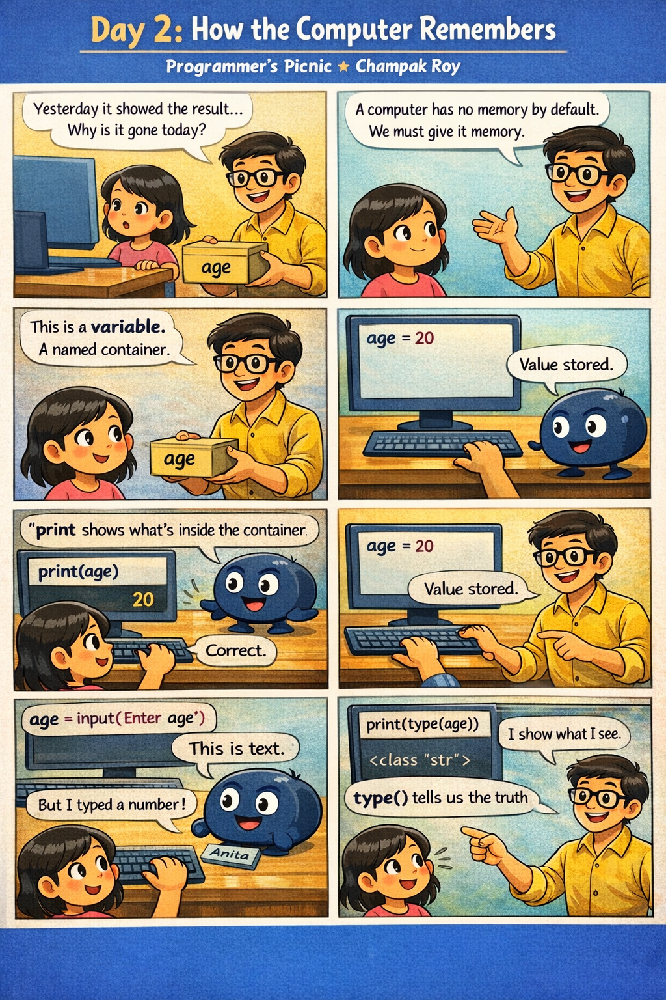

Today we learn how Python remembers information and how we can inspect what the computer sees.

A variable is a named container used to store data.
age = 20
name = "Anita"
Here:
age stores a numbername stores textprint()
print(age)
print(name)
print() shows what is inside the container.
city = input("Enter your city: ")
print(city)
⚠️ Important:
input() always gives text (string)
type()
age = input("Enter age: ")
print(type(age))
Even if you type a number, Python still sees it as text.
1️⃣ Ask user for name
2️⃣ Ask user for city
3️⃣ Ask user for age
Print:
Hello <name> from <city>. You are <age> years old.
✔ Use print()
✔ Observe type()
Variables give memory.
print() shows memory.
input() brings data.
type() removes confusion.
Tomorrow, we start calculations.